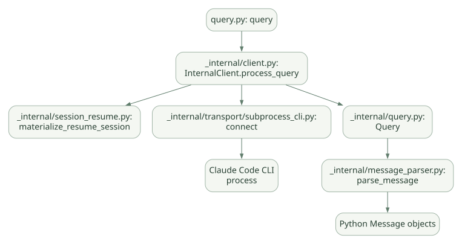

구현과 운영 / 단원 08
CLI와 연결되는 공개 코드 읽기
query → Client → Transport → Query Control → Parser
먼저 연결해 보기
이 단원에서는 공개 Python SDK의 통신·제어 경로를 따라갑니다. query의 위임, CLI 인자와 프로세스 생성, 양방향 메시지 파싱, Hook·Permission·MCP 제어 프로토콜과 Session 복원을 연결합니다.
코드에서 확인할 수 있는 사실과 CLI 내부의 비공개 세부 알고리즘을 구분하세요. 의사코드는 역할을 설명하기 위한 재구성이며, 실제 CLI 내부 함수를 검증한 코드가 아닙니다.
읽는 관점통신 요청의 ID, 오류·취소와 자원 정리, 임시 세션 복원 디렉터리의 수명주기를 추적하세요.
21. 코드 추적 ① query()에서 CLI 프로세스 시작까지#
21.1 고정 버전과 분석 대상#
- Python SDK:
v0.2.174고정 태그. - SDK가 포함한 Claude Code CLI: 릴리스 노트 기준
2.1.310. - 핵심 파일:
src/claude_agent_sdk/query.py,_internal/client.py,_internal/transport/subprocess_cli.py. - 기술적 제한: 문서/소스의 정적 경로 분석이며 실제 디버거/Trace로 관찰한 실행 결과가 아니다. [C00], [C01], [C03], [C05]
21.2 query()의 진입점#
src/claude_agent_sdk/query.py의 async def query(...)는 기본 옵션 객체를 준비하고 InternalClient().process_query()를 통해 메시지를 비동기적으로 yield한다. [C01]
# [의사코드] 실제 구현의 학습용 축약. 정확한 로직은 C01 참조.
async def query(prompt, options=None, transport=None):
if options is None:
options = ClaudeAgentOptions()
client = InternalClient()
async for message in client.process_query(prompt, options, transport):
yield message핵심: 함수가 직접 while tool_call 반복을 구현하는 것이 아니다. Client와 Transport를 통해 CLI 런타임과 통신한다.
21.3 InternalClient.process_query()#
_internal/client.py에서 다음과 같은 책임을 볼 수 있다. [C03]
session_store관련 옵션의 조합을 검사한다.- 외부 Store로부터 Session을 재개해야 하면
materialize_resume_session()을 실행한다. - 내부 실행 Generator를 열어 메시지를 수신한다.
- 종료·예외 시 내부 스트림을 정리하고 임시 설정 디렉터리를 삭제한다.
왜 정리가 중요한가? 프로세스 종료 전에 자격증명/세션 파일이 들어 있는 임시 작업 폴더를 삭제하면 실행 중 프로세스가 해당 디렉터리를 참조할 수 있다. 소스는 종료와 정리를 특정 순서로 수행한다. [C03]
21.4 CLI Transport 생성#
SubprocessCLITransport는 실행할 CLI 경로를 찾고 명령줄 인자를 만들며 프로세스를 시작하는 클래스다. _build_command()에서 아래와 같은 실질적인 대응이 확인된다. [C05]
| SDK 옵션 | CLI 인자/처리 방향 | 분석 포인트 |
|---|---|---|
system_prompt |
시스템 프롬프트 인자 | 문자열·파일·preset 형태 구분 |
tools |
--tools |
Tool 기본 노출 목록 |
allowed_tools |
--allowedTools |
자동 승인 목록 |
disallowed_tools |
--disallowedTools |
거부 규칙 |
max_turns |
--max-turns |
반복 횟수 제한 |
max_budget_usd |
--max-budget-usd |
예산 상한 |
model |
--model |
모델 선택 |
fallback_model |
--fallback-model |
대체 모델 설정 |
skills |
Skill 승인·설정 소스 기본값 처리 | v0.2.174에서 중요한 버전 차이 |
_build_command()는 --output-format stream-json --verbose 등의 인자를 구성하고, 스트리밍 입력일 때 --input-format stream-json 경로를 사용한다. [C05]
21.5 왜 환경변수가 중요한가?#
SDK 프로세스는 CLI를 자식 프로세스로 실행하므로, OS 환경변수·API 인증·Proxy·OpenTelemetry 설정·작업 디렉터리 등이 CLI에도 영향을 준다. 단, SDK의 env 전달 방식과 CLI 내부의 실제 환경 사용을 구분해야 한다. 사내망에서는 Python HTTP 클라이언트의 Proxy 설정만 바꾸면 CLI 네트워크 통신까지 모두 해결된다고 가정하지 않는다. [C05], [D21]
21.6 파일 수준 호출 관계#
넓은 도식은 가로로 이동하며 읽을 수 있습니다. 도식 크게 보기 ↗

원문에 수록된 학습용 도식입니다. 노드·화살표·분기 라벨을 보존해 다시 배치했습니다. 세부 조건과 예시·구현의 구분은 앞뒤 본문을 함께 읽으세요.
도식 원문 보기 (Mermaid)
flowchart LR
A[query.py: query] --> B[_internal/client.py: InternalClient.process_query]
B --> C[_internal/session_resume.py: materialize_resume_session]
B --> D[_internal/transport/subprocess_cli.py: connect]
D --> E[Claude Code CLI process]
B --> F[_internal/query.py: Query]
F --> G[_internal/message_parser.py: parse_message]
G --> H[Python Message objects]22. 코드 추적 ② ClaudeSDKClient와 메시지 스트림#
22.1 주요 메서드#
src/claude_agent_sdk/client.py에서 다음 API의 구현 또는 위임 경로를 확인할 수 있다. [C02]
| 메서드 | 역할 | 근거 |
|---|---|---|
connect() |
Transport/Query 연결, 세션/프로세스 초기화 | [C02] |
query(prompt) |
새 사용자 요청을 스트리밍 통신으로 전달 | [C02] |
receive_messages() |
CLI 메시지를 파싱하여 모두 내보냄 | [C02], [C07] |
receive_response() |
ResultMessage가 나올 때까지 메시지를 전달 |
[C02] |
interrupt() |
제어 메시지로 중단 요청 | [C02], [C04] |
set_permission_mode() |
실행 중 권한 모드 변경 | [C02], [C04] |
set_model() |
실행 중 모델 선택 변경 | [C02], [C04] |
rewind_files() |
파일 체크포인트 복원 요청 | [C02], [C04] |
get_mcp_status() |
MCP 연결 상태 조회 | [C02], [C04] |
get_context_usage() |
CLI 제공 컨텍스트 사용량 조회 | [C02], [C04] |
disconnect() |
Transport·Query·임시 자원 종료 | [C02] |
22.2 양방향 클라이언트에서의 핵심 차이#
단발 query()에는 스트리밍 출력이 있어도 사용자가 같은 연결에서 끼어들어 승인/질문/중단 같은 추가 제어를 지속적으로 전달하기 어렵다. ClaudeSDKClient는 연결 상태를 유지하고 읽기 작업과 쓰기 작업을 함께 관리한다. [C01], [C02]
22.3 메시지 파싱 과정#
_internal/message_parser.py의 parse_message(data)는 CLI에서 온 원시 JSON형 딕셔너리를 AssistantMessage, UserMessage, SystemMessage, ResultMessage 등 SDK가 다루는 자료형으로 변환하는 관문이다. [C07]
# [의사코드] 원본 코드의 정확한 분기를 복제한 것이 아니다.
def parse_message_like(data):
kind = data.get("type")
if kind == "system":
return build_system_message(data)
if kind == "assistant":
return build_assistant_message(data)
if kind == "user":
return build_user_message(data)
if kind == "result":
return build_result_message(data)
return handle_other_supported_events(data)실제 구현은 메시지 subtype, content block의 종류, 이벤트 ID, 오류, Tool 블록 등을 더 세밀하게 파싱한다. 이 경계는 Agent가 사용자에게 보여 줄 내용을 선택하거나 감사 로그로 남길 때 중요하다.
22.4 실무 디버깅 순서#
- CLI 프로세스 생성 여부 및 실행 경로 확인.
SystemMessage(init)수신 여부와 사용 가능 Tool 목록 확인.- 모델/도구 실행 메시지와
ResultMessage구분. is_error/subtype/permission denials 수집.- MCP Tool Handler의 오류 기록 확인.
- Session ID와 요청 ID, 실제 사용한 설정 버전 연결.
23. 코드 추적 ③ Control Protocol·Hook·Permission·MCP#
23.1 _internal/query.py의 Query 클래스#
공개 코드의 Docstring에 따르면 이 클래스는 양방향 제어 프로토콜, Hook Callback, Tool Permission Callback, 메시지 스트리밍, 초기화 Handshake를 관리한다. [C04]
이것은 Python 측에서 무엇이 구현됐는지를 정확히 말해 주는 중요한 근거다. Query가 모델 Tool 선택과 자연어 추론 알고리즘 자체를 구현하는 것은 아니다.
23.2 초기화 Handshake#
Query는 CLI와 초기화를 진행하며 Hook, MCP, Agent 정의 등의 설정을 제어 프로토콜을 통해 전달할 수 있다. 초기화가 끝난 뒤 CLI가 보내는 스트림을 처리한다. [C04]
왜 CLI 인자와 별도 프로토콜이 있나? Tool Handler/Hook 함수 자체는 명령줄 플래그로 모두 전달할 수 없다. Python 객체와 실행 중인 CLI 사이에서 제어 요청을 주고받기 위한 통신 채널이 필요하다. 추론: [C04]–[C05]
23.3 Control Request / Response#
Query._send_control_request()는 request_id 등을 사용해 CLI에 제어 명령을 보내고 해당 응답을 기다리는 흐름이다. 원본 코드에는 Timeout 처리와 응답 라우팅이 있다. [C04]
| 순서 | 호출자 → 수신자 | 전달 내용 |
|---|---|---|
| 1 | Application → ClaudeSDKClient | interrupt() / set_model() |
| 2 | ClaudeSDKClient → SDK Query | 제어 메서드 호출 |
| 3 | SDK Query → Claude CLI | control_request(request_id, subtype) |
| 4 | Claude CLI → SDK Query | control_response(request_id) |
| 5 | SDK Query → ClaudeSDKClient | success/error |
| 6 | ClaudeSDKClient → Application | 메서드 완료/예외 |
원문에 수록된 학습용 도식입니다. 호출 순서와 반복·분기 조건을 표 형태의 순서도로 보존했습니다. 세부 조건과 예시·구현의 구분은 앞뒤 본문을 함께 읽으세요.
도식 원문 보기 (Mermaid)
sequenceDiagram
participant App as Application
participant Client as ClaudeSDKClient
participant Query as SDK Query
participant CLI as Claude CLI
App->>Client: interrupt() / set_model()
Client->>Query: 제어 메서드 호출
Query->>CLI: control_request(request_id, subtype)
CLI-->>Query: control_response(request_id)
Query-->>Client: success/error
Client-->>App: 메서드 완료/예외실제 메시지 스키마·타임아웃 값·에러 코드는 고정 태그 소스를 우선한다. [C04]
23.4 Hook 실행 및 Permission Callback#
CLI가 Tool 사용을 요청하면 권한 평가 과정에서 Python SDK에 등록된 Hook이나 Permission Callback을 호출할 수 있다. Query는 해당 Callback 요청을 수신·라우팅하고 결과를 반환한다. [C04], [D06], [D07]
중요: Python Callback이 ‘항상 먼저 도구를 검사한다’가 아니다. 도구별 승인 흐름에 따라 콜백이 생략될 수 있다. 그래서 can_use_tool을 유일한 정책 엔진으로 간주하는 설계는 위험하다.
23.5 SDK MCP Bridge의 실제 내부 함수#
Query._handle_sdk_mcp_request(server_name, message)는 CLI에서 전달된 JSON-RPC 형식의 도구 메시지를 SDK 측 MCP 서버 브리지에 전달한다. 등록되지 않은 서버 이름에는 JSON-RPC 오류를 반환하고, Handler에서 예외가 발생하면 오류 응답으로 변환한다. [C04]
# [의사코드] C04의 흐름을 학습용으로 요약.
async def handle_sdk_mcp_request(server_name, message):
bridge = bridges.get(server_name)
if bridge is None:
return jsonrpc_error(code=-32601, message="unknown server")
try:
return await bridge.handle(message)
except Exception as exc:
return jsonrpc_error(code=-32603, message=str(exc))한 줄로 이해: Python Handler를 사용하는 MCP Tool 호출은 CLI → SDK Query Control → MCP Bridge → Python Handler → JSON-RPC Result → CLI 경로를 거칠 수 있다.
23.6 CLI 내부 도구 실행은 어디까지 확인 가능한가?#
| 항목 | 공개 Python SDK에서 확인 가능? | 판단 |
|---|---|---|
| Tool 옵션을 CLI에 전달 | 가능 | _build_command()와 초기화 경로 |
| Python Hook/Permission Callback 전달 | 가능 | Query의 Control 처리 |
| SDK MCP Handler 라우팅 | 가능 | _handle_sdk_mcp_request() |
| CLI가 모델 출력을 내부적으로 파싱·분류하는 모든 함수 | 불충분 | 별도 Claude CLI의 내부 구현 |
| CLI 내부 도구 호출 스케줄링의 전체 알고리즘 | 불충분 | 문서 설명과 관찰 가능한 메시지까지 근거 |
| 샌드박스 규칙의 OS 레벨 시행 세부 | 전체는 불충분 | 공식 보안 문서와 실제 격리 테스트 필요 |
이 표는 다른 프레임워크와 비교할 때 소스 공개·커스터마이징 가능 범위를 판단하는 핵심이다.
24. 코드 추적 ④ SessionStore와 Resume#
24.1 사용 목적#
다중 호스트 애플리케이션에서 Session을 로컬 파일에만 보존하면 다른 서버가 이전 대화를 그대로 이어받기 어렵다. SessionStore는 로컬 Transcript의 외부 저장·불러오기를 지원하는 확장 지점이다. [D09]
24.2 코드 경로#
_internal/client.py의 process_query()는 materialize_resume_session(options)를 호출할 수 있다. _internal/session_resume.py의 materialize_resume_session()은 외부 저장소에서 세션을 읽어 CLI가 접근 가능한 임시 CLAUDE_CONFIG_DIR 구조로 구성한다. 종료 시 임시 디렉터리를 정리한다. [C03], [C08]
중요한 설계 사실: CLI는 로컬 형식의 세션 기록을 읽는 구조를 유지하고, SDK가 별도 Store 데이터를 CLI가 읽을 수 있는 임시 디렉터리 형태로 중개한다. 외부 Store를 CLI에 직접 내장된 벡터 검색 메모리로 취급하지 않는다.
24.3 개발자가 만들어야 하는 부분#
- 외부 세션 Store의 저장 정책·권한·암호화.
- 세션과 사용자 식별자 매핑.
- 동시성 및 충돌 제어.
- 복구 시 세션 무결성 검증.
- 감사 및 삭제/보존 정책.
- 도메인 지식 RAG와 세션 저장소 사이의 경계.
24.4 코드 분석에서 특히 흥미로운 부분#
materialize_resume_session()의 유효한 Session ID 여부 검사.resume/continue의 외부 Store 조회 분기.- Temp
CLAUDE_CONFIG_DIR생성과 세션 내용 복원. - Subagent transcript의 subpath 보존.
- 종료 시 임시 자격증명·파일 정리.
실제 코드 링크는 [C03], [C08], [C09]를 참고한다.